Über die folgenden Formatierungsbuttons kann das Datenformat der Zellen individuell angepasst werden.
Buttons "Datenformat"
Ø Als Währung formatieren
Durch Anwahl dieses Buttons wird der Inhalt der Zelle(n) als Währung dargestellt.
Beispiel
In die Zelle "B2" wurde der Wert "1250,59" eingetragen und als Währung formatiert.
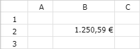
Ø
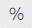
Als Prozent formatierenDurch Anwahl dieses Buttons wird der Inhalt der Zelle(n) als Prozentwert dargestellt.
Beispiel
In die Zelle "B2" wurde der Wert "1250,59" eingetragen und als Prozent formatiert.
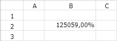
Ø
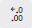
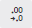
Dezimalstellen erhöhen / verringernDurch Anwahl dieser Buttons können die Dezimalstellen der Zelle(n) erhöht bzw. verringert werden.
Beispiel
In beide Zellen wurde der Wert "1250,59" eingetragen. Bei "B2" wurde anschließend die Anzahl der Dezimalstellen erhöht und bei "B3" verringert.
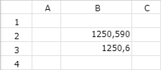
Ø Weitere Formate
An dieser Stelle wird das aktuelle Datenformat der Zelle dargestellt. Durch Anwahl des Buttons kann das Format individuell angepasst werden.
ü Automatisch
Auf Grundlage des
Zelleninhalts ermittelt das WinCalc selbstständig das Format.
ü Klartext
Der Zelleninhalt wird
als Text (linksbündig) dargestellt.
ü Zahl
Der Zelleninhalt wird als
Zahl (rechtsbündig) mit 2 Nachkommastellen (ohne Tausendertrennzeichen)
angezeigt.
Beispiel
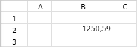
ü Prozent
Der Zelleninhalt wird
als Prozentwert (rechtsbündig) mit 2 Nachkommastellen (ohne
Tausendertrennzeichen) und Prozentzeichen angezeigt.
Beispiel
ü Wissenschaftlich
Das
wissenschaftliche Format zeigt eine Zahl in exponentieller Notation an
(rechtbündig). Hierbei wird ein Teil der Zahl durch E+n ersetzt wird, wobei E
(Exponent) die vorangehende Zahl mit 10 auf die n-tePotenz multipliziert.
Beispiel
ü Buchführung
Der Zelleninhalt
wird als Buchungswert (rechtsbündig) mit 2 Nachkommastellen (inklusive
Tausendertrennzeichen) und Währungskennzeichen € angezeigt.
Beispiel
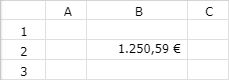
ü Währung
Der Zelleninhalt wird
als Währung (rechtsbündig) mit 2 Nachkommastellen (inklusive
Tausendertrennzeichen) und Währungskennzeichen € angezeigt.
Beispiel
ü Datum
Der Zelleninhalt wird als
Datum ohne Uhrzeit (rechtsbündig) angezeigt.
Beispiel
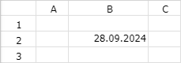
ü Zeit
Der Zelleninhalt wird als
Uhrzeit (rechtsbündig) angezeigt.
Beispiel
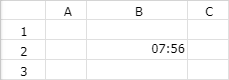
ü Datum Zeit
Der Zelleninhalt
wird als Datum mit Uhrzeit (rechtsbündig) angezeigt.
Beispiel
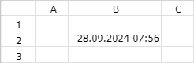